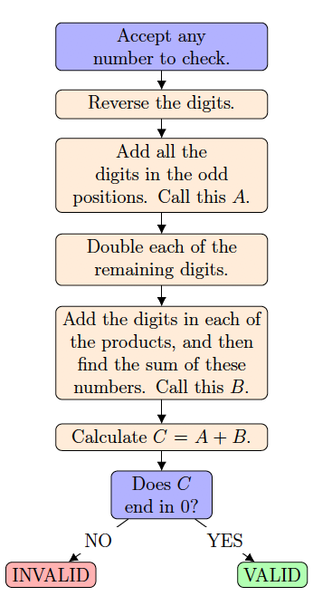

Problem
Debit and credit cards contain account numbers which consist of many digits. When purchasing items online, you are often asked to type in your account number. Because there are so many digits, it is easy to type the number incorrectly. The last digit of the number is a specially generated check digit which can be used to quickly verify the validity of the number. A common algorithm used for verifying numbers is called the Luhn Algorithm. A series of operations are performed on the number and a final result is produced. If the final result ends in zero, the number is valid. Otherwise, the number is invalid.
The steps performed in the Luhn Algorithm are outlined in the flowchart below. Two examples are provided.

Example 1:
Number: \(135792\)
Reversal: \(\textcolor{red}{2}9\textcolor{red}{7}5\textcolor{red}{3}1\)
\(\begin{aligned} A&=\textcolor{red}{2+7+3}\\ &=12\\ \end{aligned}\)
\(\begin{aligned} 2\times9&=18\\ 2\times5&=10\\ 2\times1&=2\\ \end{aligned}\)
\(\begin{aligned} B&=(1+8)+(1+0)+2\\ &=9+1+2\\ &=12\\ \end{aligned}\)
\(C=12+12=24\)\(C\) does not end in zero.
The number is not valid.
Example 2:
Number: \(1357987\)
Reversal: \(\textcolor{red}{7}8\textcolor{red}{9}7\textcolor{red}{5}3\textcolor{red}{1}\)
\(\begin{aligned} A&=\textcolor{red}{7+9+5+1}\\ &=22\\ \end{aligned}\)
\(\begin{aligned} 2\times8&=16\\ 2\times7&=14\\ 2\times3&=6\\ \end{aligned}\)
\(\begin{aligned} B&=(1+6)+(1+4)+6\\ &=7+5+6\\ &=18\\ \end{aligned}\)
\(C=22+18=40\)
\(C\) ends in zero.
The number is valid.
The number \(8763\,D8D4\,D6D8\,0459\) is a valid number when verified by the Luhn Algorithm. \(D\) is an integer from 0 to 9 occurring four times in the number. (It may also be one of the existing known digits.) Determine all possible values of \(D\).
Solution
Solution 1
When the digits of the number are reversed the resulting number is \(9540\,8D6D\,4D8D\,3678\). The sum of the digits in the odd positions is
\[A=9+4+8+6+4+8+3+7=49\]
When the digits in the remaining positions are doubled, the following products are obtained:
\[2\times 5=10;~ 2\times 0=0;~ 2\times D=2D;~ 2\times D=2D;~ 2\times D=2D;~ 2\times D=2D;~ 2\times 6=12;~ \text{and }2\times 8=16.\]
Let \(x\) represent the sum of the digits of \(2D\).
When the digit sums from each of the products are added, the sum is: \[B=(1+0)+0+x+x+x+x+(1+2)+(1+6)=1+0+4x+3+7=4x+11\]
Since \(C=A+B\), we have \(C=49+4x+11=60+4x\).
When an integer from \(0\) to \(9\) is doubled and the digits of the product are added together, what are the possible sums which can be obtained?
| Original Digit \(\rightarrow D\) | \(0\) | \(1\) | \(2\) | \(3\) | \(4\) | \(5\) | \(6\) | \(7\) | \(8\) | \(9\) |
|---|---|---|---|---|---|---|---|---|---|---|
| Twice the Original Digit \(\rightarrow 2D\) | \(0\) | \(2\) | \(4\) | \(6\) | \(8\) | \(10\) | \(12\) | \(14\) | \(16\) | \(18\) |
| The Sum of the Digits of \(2D\) | \(0\) | \(2\) | \(4\) | \(6\) | \(8\) | \(1\) | \(3\) | \(5\) | \(7\) | \(9\) |
Notice that the sum of the digits of twice the original digit can only be an integer from \(0\) to \(9\) inclusive. It follows that the only values for \(x\) are the integers from \(0\) to \(9\).
To be a valid number, the units digit of \(C\) must be 0. We want \(60+4x\) to be an integer greater than or equal to \(60\) such that the units digit is \(0\).
Can \(60+4x=60\)? When \(4x=0\), then \(x=0\), \(60+4x=0\) and \(D=0\). That is, when \(D=0\), \(2D=0\) and the sum of the digits of \(2D\) is \(x=0\). This value of \(D\) produces a valid number.
Can \(60+4x=70\)? When \(4x=10\), then \(x=2.5\) and \(60+4x=70\). But \(x\) must be an integer value so this is not possible.
Can \(60+4x=80\)? When \(4x=20\), then \(x=5\), \(60+4x=80\) and \(D=7\). That is, when \(D=7\), \(2D=14\) and the sum of the digits of \(2D\) is \(x=5\). This value of \(D\) produces a valid number.
Can \(60+4x=90\)? When \(4x=30\), then \(x=7.5\) and \(60+4x=90\). But \(x\) must be an integer value so this is not possible.
Can \(60+4x=100\)? When \(4x=40\), then \(x=10\) and \(60+4x=100\). But \(x\) must be an integer from 0 to 9 inclusive, so this is not possible.
Every integer ending in 0 that is larger than 100 would produce a value for \(x\) greater than 10. There are no more possible values for \(x\) or \(D\).
Therefore, the two valid possibilities for \(D\) are \(0\) and \(7\).
When \(D=0\), the number is \(8763\,0804\,0608\,0459\), which is indeed valid by the Luhn Algorithm.
When \(D=7\), the number is \(8763\,7874\,7678\,0459\), which is indeed valid by the Luhn Algorithm.
Solution 2
The second solution looks at each of the possible values of \(D\) and then verifies the resulting number. A computer program or spreadsheet could be developed to solve this problem efficiently.
Remember that \(A\) is the sum of the digits in the odd positions of the reversal. Each of the digits in the even positions of the reversal are doubled and \(B\) is the sum of the sum of the digits of each of these products. \(C\) is the sum \(A+B\).
| \(D\) | Number | Reversal | \(A\) | Double Even Digits | \(B\) | \(C\) | Valid/Invalid |
|---|---|---|---|---|---|---|---|
| \(0\) | \(8763\ 0804\ 0608\ 0459\) | \(9540\ 8060\ 4080\ 3678\) | \(49\) | \(10,\ 0,\ 0,\ 0,\ 0,\ 0,\ 12,\ 16\) | \(11\) | \(60\) | Valid |
| \(1\) | \(8763\ 1814\ 1618\ 0459\) | \(9540\ 8161\ 4181\ 3678\) | \(49\) | \(10,\ 0,\ 2,\ 2,\ 2,\ 2,\ 12,\ 16\) | \(19\) | \(68\) | Invalid |
| \(2\) | \(8763\ 2824\ 2628\ 0459\) | \(9540\ 8262\ 4282\ 3678\) | \(49\) | \(10,\ 0,\ 4,\ 4,\ 4,\ 4,\ 12,\ 16\) | \(27\) | \(76\) | Invalid |
| \(3\) | \(8763\ 3834\ 3638\ 0459\) | \(9540\ 8363\ 4383\ 3678\) | \(49\) | \(10,\ 0,\ 6,\ 6,\ 6,\ 6,\ 12,\ 16\) | \(35\) | \(84\) | Invalid |
| \(4\) | \(8763\ 4844\ 4648\ 0459\) | \(9540\ 8464\ 4484\ 3678\) | \(49\) | \(10,\ 0,\ 8,\ 8,\ 8,\ 8,\ 12,\ 16\) | \(43\) | \(92\) | Invalid |
| \(5\) | \(8763\ 5854\ 5658\ 0459\) | \(9540\ 8565\ 4585\ 3678\) | \(49\) | \(10,\ 0,\ 10,\ 10,\ 10,\ 10,\ 12,\ 16\) | \(15\) | \(64\) | Invalid |
| \(6\) | \(8763\ 6864\ 6668\ 0459\) | \(9540\ 8666\ 4686\ 3678\) | \(49\) | \(10,\ 0,\ 12,\ 12,\ 12,\ 12,\ 12,\ 16\) | \(23\) | \(72\) | Invalid |
| \(7\) | \(8763\ 7874\ 7678\ 0459\) | \(9540\ 8767\ 4787\ 3678\) | \(49\) | \(10,\ 0,\ 14,\ 14,\ 14,\ 14,\ 12,\ 16\) | \(31\) | \(80\) | Valid |
| \(8\) | \(8763\ 8884\ 8688\ 0459\) | \(9540\ 8868\ 4888\ 3678\) | \(49\) | \(10,\ 0,\ 16,\ 16,\ 16,\ 16,\ 12,\ 16\) | \(39\) | \(88\) | Invalid |
| \(9\) | \(8763\ 9894\ 9698\ 0459\) | \(9540\ 8969\ 4989\ 3678\) | \(49\) | \(10,\ 0,\ 18,\ 18,\ 18,\ 18,\ 12,\ 16\) | \(47\) | \(96\) | Invalid |
Therefore, the two valid possibilities for \(D\) are \(0\) and \(7\).